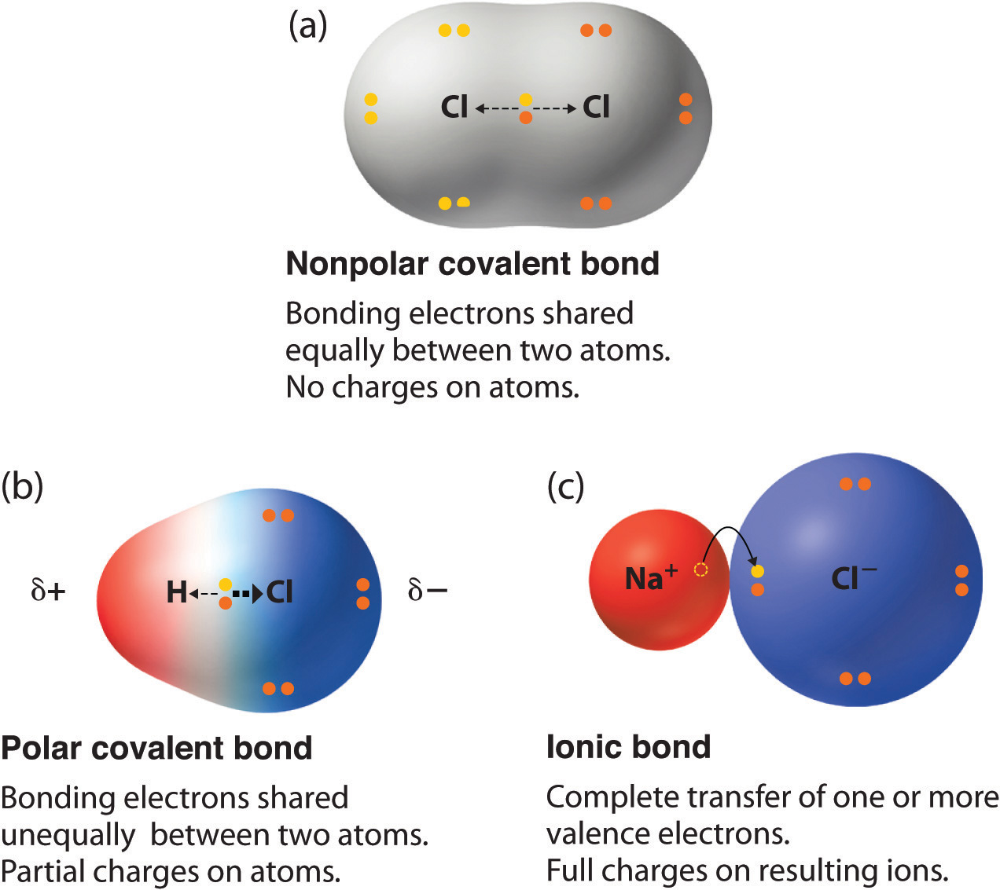
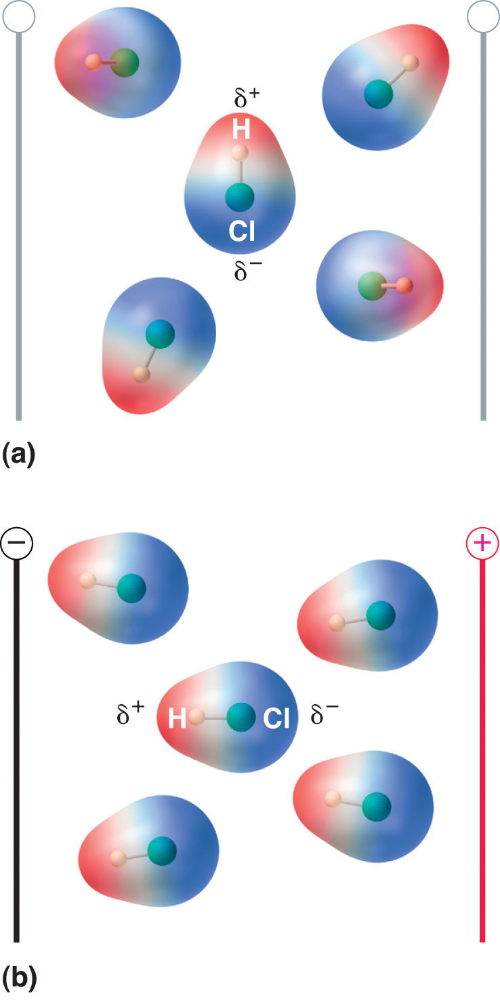
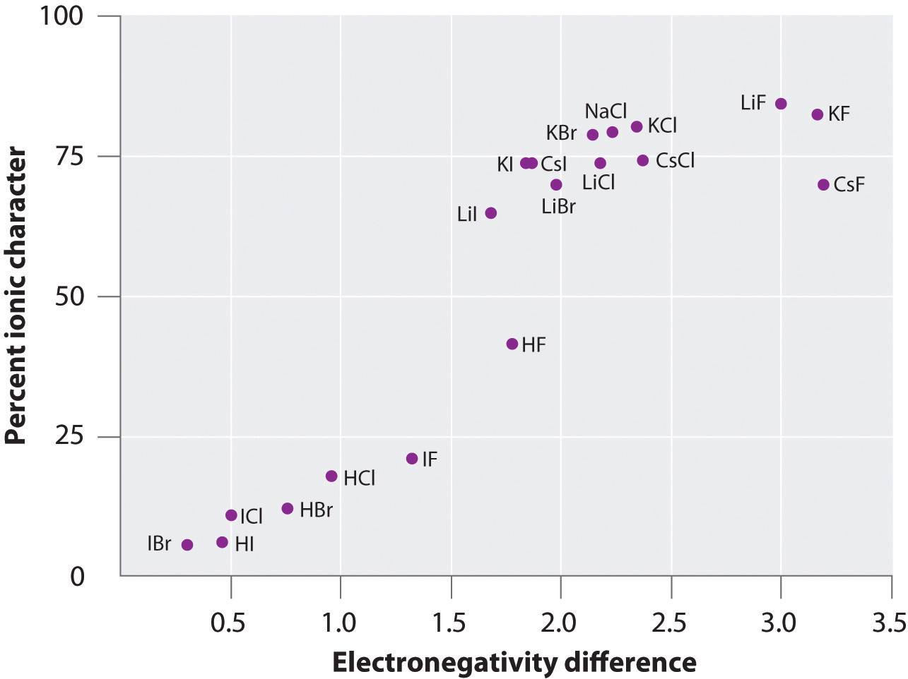

In Chapter 2 "Molecules, Ions, and Chemical Formulas" and Section 8.1 "An Overview of Chemical Bonding", we described the two idealized extremes of chemical bonding: (1) ionic bonding—in which one or more electrons are transferred completely from one atom to another, and the resulting ions are held together by purely electrostatic forces—and (2) covalent bonding, in which electrons are shared equally between two atoms. Most compounds, however, have polar covalent bondsA covalent bond in which the electrons are shared unequally between the bonded atoms., which means that electrons are shared unequally between the bonded atoms. Figure 8.12 "The Electron Distribution in a Nonpolar Covalent Bond, a Polar Covalent Bond, and an Ionic Bond Using Lewis Electron Structures" compares the electron distribution in a polar covalent bond with those in an ideally covalent and an ideally ionic bond. Recall from Chapter 4 "Reactions in Aqueous Solution", Section 4.1 "Aqueous Solutions" that a lowercase Greek delta () is used to indicate that a bonded atom possesses a partial positive charge, indicated by or a partial negative charge, indicated by and a bond between two atoms that possess partial charges is a polar bond.
Figure 8.12 The Electron Distribution in a Nonpolar Covalent Bond, a Polar Covalent Bond, and an Ionic Bond Using Lewis Electron Structures
In a purely covalent bond (a), the bonding electrons are shared equally between the atoms. In a purely ionic bond (c), an electron has been transferred completely from one atom to the other. A polar covalent bond (b) is intermediate between the two extremes: the bonding electrons are shared unequally between the two atoms, and the electron distribution is asymmetrical with the electron density being greater around the more electronegative atom. Electron-rich (negatively charged) regions are shown in blue; electron-poor (positively charged) regions are shown in red.
The polarity of a bond—the extent to which it is polar—is determined largely by the relative electronegativities of the bonded atoms. In Chapter 7 "The Periodic Table and Periodic Trends", electronegativity (χ) was defined as the ability of an atom in a molecule or an ion to attract electrons to itself. Thus there is a direct correlation between electronegativity and bond polarity. A bond is nonpolar if the bonded atoms have equal electronegativities. If the electronegativities of the bonded atoms are not equal, however, the bond is polarized toward the more electronegative atom. A bond in which the electronegativity of B (χB) is greater than the electronegativity of A (χA), for example, is indicated with the partial negative charge on the more electronegative atom:
One way of estimating the ionic character of a bond—that is, the magnitude of the charge separation in a polar covalent bond—is to calculate the difference in electronegativity between the two atoms: Δχ = χB − χA.
To predict the polarity of the bonds in Cl2, HCl, and NaCl, for example, we look at the electronegativities of the relevant atoms: χCl = 3.16, χH = 2.20, and χNa = 0.93 (see Figure 7.14 "A Plot of Periodic Variation of Electronegativity with Atomic Number for the First Six Rows of the Periodic Table"). Cl2 must be nonpolar because the electronegativity difference (Δχ) is zero; hence the two chlorine atoms share the bonding electrons equally. In NaCl, Δχ is 2.23. This high value is typical of an ionic compound (Δχ ≥ ≈1.5) and means that the valence electron of sodium has been completely transferred to chlorine to form Na+ and Cl− ions. In HCl, however, Δχ is only 0.96. The bonding electrons are more strongly attracted to the more electronegative chlorine atom, and so the charge distribution is
Remember that electronegativities are difficult to measure precisely and different definitions produce slightly different numbers. In practice, the polarity of a bond is usually estimated rather than calculated.
Bond polarity and ionic character increase with an increasing difference in electronegativity.
As with bond energies, the electronegativity of an atom depends to some extent on its chemical environment. It is therefore unlikely that the reported electronegativities of a chlorine atom in NaCl, Cl2, ClF5, and HClO4 would be exactly the same.
The asymmetrical charge distribution in a polar substance such as HCl produces a dipole momentThe product of the partial charge on the bonded atoms and the distance between the partial charges: , where is measured in coulombs (C) and in meters (m)., abbreviated by the Greek letter mu (µ). The dipole moment is defined as the product of the partial charge Q on the bonded atoms and the distance r between the partial charges:
Equation 8.16
µ = Qrwhere Q is measured in coulombs (C) and r in meters. The unit for dipole moments is the debye (D):
Equation 8.17
1 D = 3.3356 × 10−30 C·mWhen a molecule with a dipole moment is placed in an electric field, it tends to orient itself with the electric field because of its asymmetrical charge distribution (Figure 8.13 "Molecules That Possess a Dipole Moment Partially Align Themselves with an Applied Electric Field").
Figure 8.13 Molecules That Possess a Dipole Moment Partially Align Themselves with an Applied Electric Field
In the absence of a field (a), the HCl molecules are randomly oriented. When an electric field is applied (b), the molecules tend to align themselves with the field, such that the positive end of the molecular dipole points toward the negative terminal and vice versa.
We can measure the partial charges on the atoms in a molecule such as HCl using Equation 8.16. If the bonding in HCl were purely ionic, an electron would be transferred from H to Cl, so there would be a full +1 charge on the H atom and a full −1 charge on the Cl atom. The dipole moment of HCl is 1.109 D, as determined by measuring the extent of its alignment in an electric field, and the reported gas-phase H–Cl distance is 127.5 pm. Hence the charge on each atom is
Equation 8.18
By dividing this calculated value by the charge on a single electron (1.6022 × 10−19 C), we find that the charge on the Cl atom of an HCl molecule is about −0.18, corresponding to about 0.18 e−:
Equation 8.19
To form a neutral compound, the charge on the H atom must be equal but opposite. Thus the measured dipole moment of HCl indicates that the H–Cl bond has approximately 18% ionic character (0.1811 × 100), or 82% covalent character. Instead of writing HCl as we can therefore indicate the charge separation quantitatively as
Our calculated results are in agreement with the electronegativity difference between hydrogen and chlorine χH = 2.20; χCl = 3.16, χCl − χH = 0.96), a value well within the range for polar covalent bonds. We indicate the dipole moment by writing an arrow above the molecule.Mathematically, dipole moments are vectors, and they possess both a magnitude and a direction. The dipole moment of a molecule is the vector sum of the dipoles of the individual bonds. In HCl, for example, the dipole moment is indicated as follows:
The arrow shows the direction of electron flow by pointing toward the more electronegative atom.
The charge on the atoms of many substances in the gas phase can be calculated using measured dipole moments and bond distances. Figure 8.14 "A Plot of the Percent Ionic Character of a Bond as Determined from Measured Dipole Moments versus the Difference in Electronegativity of the Bonded Atoms" shows a plot of the percent ionic character versus the difference in electronegativity of the bonded atoms for several substances. According to the graph, the bonding in species such as NaCl(g) and CsF(g) is substantially less than 100% ionic in character. As the gas condenses into a solid, however, dipole–dipole interactions between polarized species increase the charge separations. In the crystal, therefore, an electron is transferred from the metal to the nonmetal, and these substances behave like classic ionic compounds. The data in Figure 8.14 "A Plot of the Percent Ionic Character of a Bond as Determined from Measured Dipole Moments versus the Difference in Electronegativity of the Bonded Atoms" show that diatomic species with an electronegativity difference of less than 1.5 are less than 50% ionic in character, which is consistent with our earlier description of these species as containing polar covalent bonds. The use of dipole moments to determine the ionic character of a polar bond is illustrated in Example 11.
Figure 8.14 A Plot of the Percent Ionic Character of a Bond as Determined from Measured Dipole Moments versus the Difference in Electronegativity of the Bonded Atoms
In the gas phase, even CsF, which has the largest possible difference in electronegativity between atoms, is not 100% ionic. Solid CsF, however, is best viewed as 100% ionic because of the additional electrostatic interactions in the lattice.
In the gas phase, NaCl has a dipole moment of 9.001 D and an Na–Cl distance of 236.1 pm. Calculate the percent ionic character in NaCl.
Given: chemical species, dipole moment, and internuclear distance
Asked for: percent ionic character
Strategy:
A Compute the charge on each atom using the information given and Equation 8.16.
B Find the percent ionic character from the ratio of the actual charge to the charge of a single electron.
Solution:
A The charge on each atom is given by
Thus NaCl behaves as if it had charges of 1.272 × 10−19 C on each atom separated by 236.1 pm.
B The percent ionic character is given by the ratio of the actual charge to the charge of a single electron (the charge expected for the complete transfer of one electron):
Exercise
In the gas phase, silver chloride (AgCl) has a dipole moment of 6.08 D and an Ag–Cl distance of 228.1 pm. What is the percent ionic character in silver chloride?
Answer: 55.5%
Compounds with polar covalent bonds have electrons that are shared unequally between the bonded atoms. The polarity of such a bond is determined largely by the relative electronegativites of the bonded atoms. The asymmetrical charge distribution in a polar substance produces a dipole moment, which is the product of the partial charges on the bonded atoms and the distance between them.
Why do ionic compounds such as KI exhibit substantially less than 100% ionic character in the gas phase?
Of the compounds LiI and LiF, which would you expect to behave more like a classical ionic compound? Which would have the greater dipole moment in the gas phase? Explain your answers.
Predict whether each compound is purely covalent, purely ionic, or polar covalent.
Based on relative electronegativities, classify the bonding in each compound as ionic, covalent, or polar covalent. Indicate the direction of the bond dipole for each polar covalent bond.
Based on relative electronegativities, classify the bonding in each compound as ionic, covalent, or polar covalent. Indicate the direction of the bond dipole for each polar covalent bond.
Classify each species as having 0%–40% ionic character, 40%–60% ionic character, or 60%–100% ionic character based on the type of bonding you would expect. Justify your reasoning.
If the bond distance in HCl (dipole moment = 1.109 D) were double the actual value of 127.46 pm, what would be the effect on the charge localized on each atom? What would be the percent negative charge on Cl? At the actual bond distance, how would doubling the charge on each atom affect the dipole moment? Would this represent more ionic or covalent character?
Calculate the percent ionic character of HF (dipole moment = 1.826 D) if the H–F bond distance is 92 pm.
Calculate the percent ionic character of CO (dipole moment = 0.110 D) if the C–O distance is 113 pm.
Calculate the percent ionic character of PbS and PbO in the gas phase, given the following information: for PbS, r = 228.69 pm and µ = 3.59 D; for PbO, r = 192.18 pm and µ = 4.64 D. Would you classify these compounds as having covalent or polar covalent bonds in the solid state?